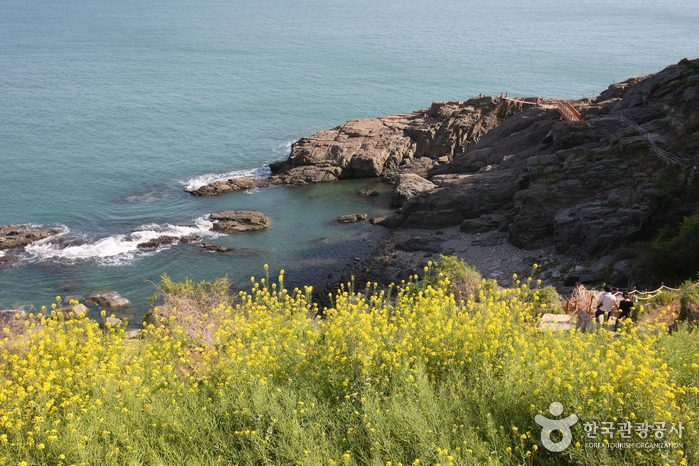

남해 가천 해변과 암수바위

지역 : 경남 남해
설명 : 가천미륵이라고도 불리는 6m에 가까운 거대한 한 쌍의 바위로, 옛 뱃사람들이 천재지변과 비바람을 막아달라 기도를 드리던 애환이 담긴 장소.
웹사이트 링크 1:
http://tour.namhae.go.kr/00002830/00002831/00002843.web
웹사이트 링크 2:
https://place.map.kakao.com/8700862
웹사이트 링크 3:
https://goo.gl/maps/zpHsvegcQoY9RdRK8